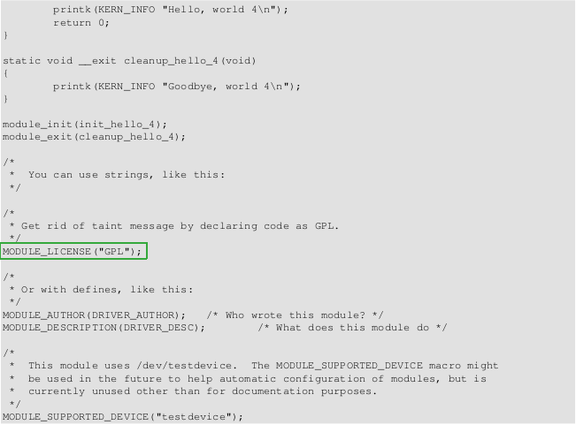

hello−1.c
Kernel modules must have at least two functions a initialization
function called init_module which is called when the module
is insmoded into the kernel, and a cleanup function called cleanup_module
which is called just before the module is rmmoded.

hello−2.c
As of Linux 2.4, you can rename the init and cleanup functions
of your modules; they no longer have to becalled
init_module() and cleanup_module() respectively. This is done
with the module_init()and module_exit() macros.
These macros are defined in linux/init.h. The only caveat is that
yourinit and cleanup functions must be defined before calling the
macros, otherwise you'll get compilation errors.
Need to clarify this later:
Now have a look at linux/drivers/char/Makefile for a real world
example. As you can see, some
things get hardwired into the kernel (obj−y) but where are all
those obj−m gone? Those familiar with shell
scripts will easily be able to spot them. For those not, the
obj−$(CONFIG_FOO) entries you see everywhere
expand into obj−y or obj−m, depending on whether the CONFIG_FOO
variable has been set to y or m. While
we are at it, those were exactly the kind of variables that you have
set in the linux/.config file, the last
time when you said make menuconfig or something like that.
hello−3.c
There is also an __initdata which works similarly to __init
but for init variables rather than functions.
hello−4.c
Licensing and Module Documentation
By setting the license to GPL, you can keep the
warning from being printed.

2.6. Passing Command Line Arguments to
a Module
hello−5.c
At runtime, insmod will fill the variables with any
command line arguments that are given, like ./insmod mymodule.ko
myvariable=5.
Lastly, there's a macro function, MODULE_PARM_DESC(), that is used
to document arguments that the
module can take. It takes two parameters: a variable name and a free
form string describing that variable.

2.7. Modules Spanning Multiple Files
2.8. Building modules for a precompiled kernel
Obviously, we strongly suggest you to recompile your kernel, so that
you can enable a number of useful
debugging features, such as forced module unloading
(MODULE_FORCE_UNLOAD): when this option is
enabled, you can force the kernel to unload a module even when it
believes it is unsafe, via a rmmod −f
module command . This option can save you a lot of time and
a number of reboots during the development of
a module.
Now, if you just install a kernel source tree, use it to compile
your kernel module and you try to insert your
module into the kernel, in most cases you would obtain an error as
follows:
insmod: error inserting 'poet_atkm.ko': −1 Invalid module format
Less cryptical information are logged to /var/log/messages:
To overcome this problem we could resort to the −−force−vermagic
option, but this solution is potentially
unsafe, and unquestionably inacceptable in production modules.
Consequently, we want to compile our
module in an environment which was identical to the one in which our
precompiled kernel was built. How to
do this, is the subject of the remainder of this chapter.